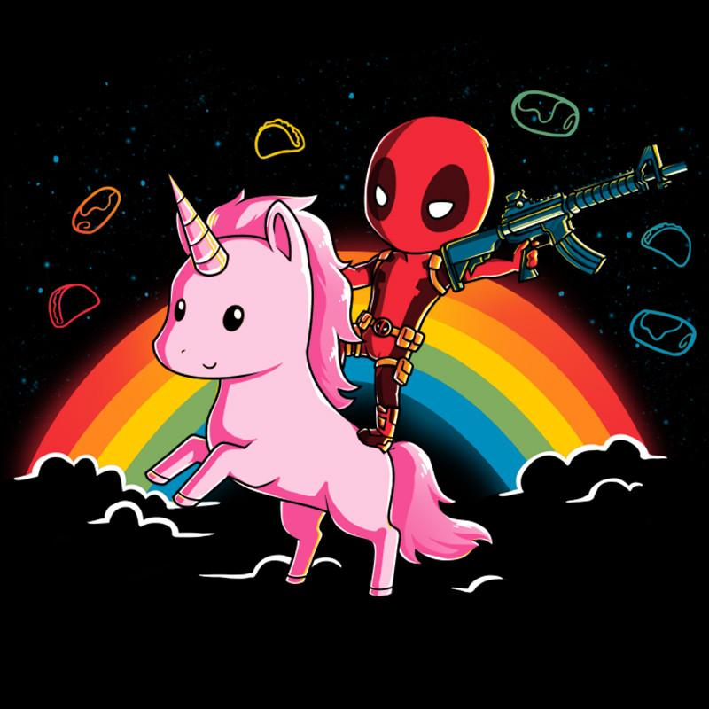

Design Sprint
This project is for any and all Design Sprint information and documents
related (but not limited to) research, examples, favorite
ideas, etc.
Dashboards
Competitive Research
- Nothing yet!
Inspirational Research
Animations
Inspirational Research
-
Seattle Cider Company Desktop
- animations guide you to scroll through the site
Colors
Competitive Research
- Nothing yet!
Inspirational Research
- 